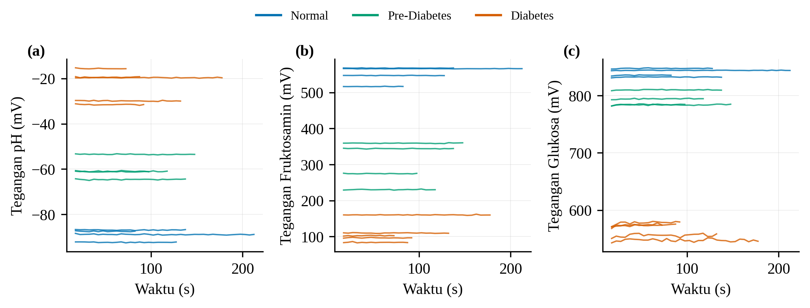
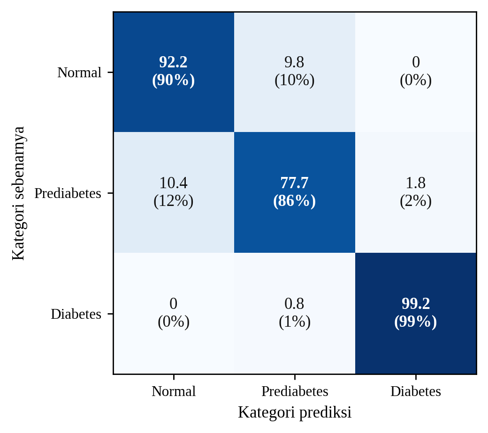

SVM dan tiga biomarka membedakan tiga kelas risiko
DATA SIMULASI13 sesi · 292 jendelak = 0,44
±92%
akurasi
0,92
macro F1
aTiga kelas terpisah pada tegangan

Tegangan pH, fruktosamin, dan glukosa membentuk tiga tingkat berurutan: Normal, Prediabetes, Diabetes.
bAkurasi klasifikasi SVM

| Kelas | Presisi | Recall | F1 |
|---|---|---|---|
| Normal | 90% | 90% | 90% |
| Prediabetes | 89% | 86% | 87% |
| Diabetes | 98% | 99% | 99% |
| Macro | 93% | 92% | 92% |
Salah tebak hanya pada kelas bersebelahan.
c3 kanal > 1 kanal

Makin beragam orangnya (k naik), gabungan tiga kanal paling tahan.
dDi dashboard

Tampilan demo, tren prediksi per hari. Kalibrasi sementara.